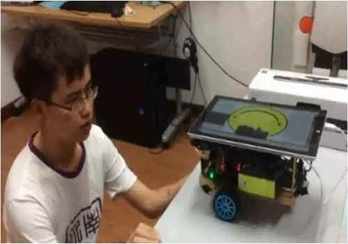
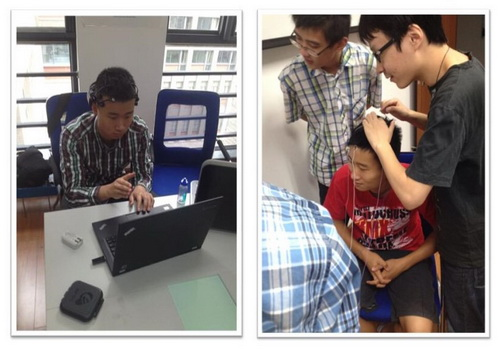

研究方向-机器人智能
在冰冷的机器中注入灵魂
1.机器人学习算法
我们更加关心如何让机器人能够像人一样思考，使其具备一套自主开放式的学习系统。我们假想刚设计好的机器人就像是一个婴儿一样，我们希望他能够通过自主地观察和人类有监督的教导来逐渐感知和认知世界，变得越来越聪明。并且，我们还希望机器人在感知世界的同时能够综合利用自身多项传感器，通过感官之间的联想记忆对各种传感器数据进行融合，从而形成对环境中事物的全方位理解，获取事物的概念，并最终形成决策。
2.轮型机器人的设计和制造
我们使用树莓派等机器人硬件开发平台设计和搭建移动式小车机器人。机器人上可以配置各种传感器来捕捉外界环境信息，例如使用麦克风获取声音、利用摄像头采集图像、利用碰撞检测传感器检测障碍物等。机器人硬件是我们开发各类机器人项目的平台基础，我们将在自己搭建的机器人上开发各种机器人控制系统和智能算法。
3.人机交互控制
我们希望设计更加自然的人机控制方式来实现机器人的控制。这些控制方式既包括传统的按键控制、文本控制、手势控制等，还包括更加新型和富有挑战性的语音控制和脑电控制等。此外，我们还设计了一套包容式多场景控制系统对各类控制方式进行整合，使机器人能够有条理地理解用户各种控制信号，并具有控制通道扩展的能力。
4.智能家居服务机器人

我们研究如何设计一个机器人智能管家，能够帮助用户更好地管理生活。例如：机器人管家能够与家中的各类智能家电进行交互，用户能够命令机器人控制各类智能家电；用户能够与机器人智能地交互，询问机器人天气情况、家居状态等；机器人能够在家中巡逻监控，使用户不在家时也能随时掌握家中状态。